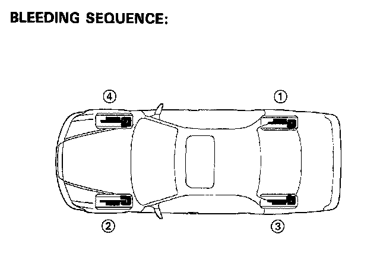
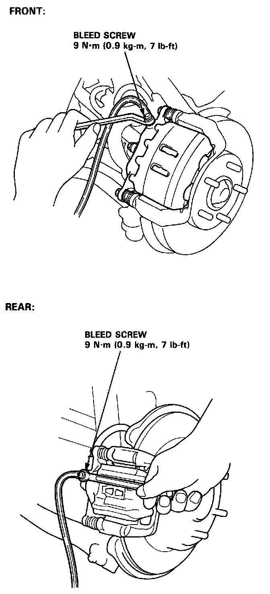

Conventional Brake System
NOTE: Proper bleeding sequence is RR, LF, LR, RF.CAUTION:
- Use only clean DOT3 or 4 brake fluid.
- Make sure no dirt or other foreign matter is allowed to contaminate the brake fluid.
- Do not mix different brands of brake fluid as they may not be compatible.
- Do not spill brake fluid on the car, it may damage the paint; if brake fluid does contact the paint, wash it off immediately with water.
NOTE: The reservoir on the master cylinder must be full at the start of bleeding procedure, and checked after bleeding each brake caliper. Add fluid as required. Use only clean DOT3 or 4 brake fluid.

1. Have someone slowly pump the brake pedal several times, then apply steady pressure.

2. Loosen the brake bleed screw to allow air to escape from the system. Then tighten the bleed screw securely.
3. Repeat the procedure for each wheel in the sequence shown above until air bubbles no longer appear in the fluid.
4. Check the brake performance by road testing.